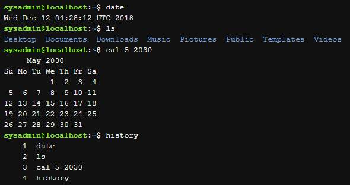
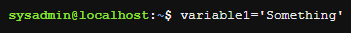
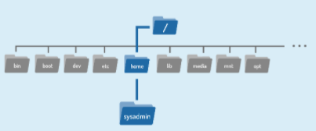

Introduction.
Most consumer operating systems are designed to shield the user from the ins and outs of the CLI. The Linux community is different in that it positively celebrates the CLI for its power, speed and ability to accomplish a vast array of tasks with a single command line instruction.
When a user first encounters the CLI, they can find it challenging because it requires memorizing a dizzying amount of commands and their options. However, once a user has learned the structure of how commands are used, where the necessary files and directories are located and
how to navigate the hierarchy of a file system, they can be immensely productive. This capability provides more precise control, greater speed and the ability to automate tasks more easily through scripting.
Furthermore, by learning the CLI, a user can easily be productive almost instantly on ANY flavor or distribution of Linux, reducing the amount of time needed to familiarize themselves with a system because of variations in a GUI.
Shell
Once a user has entered a command the terminal then accepts what the user has typed and passes it to a shell. The shell is the command line interpreter that translates commands entered by a user into actions to be performed by the operating system. If output is produced by the command,
then text is displayed in the terminal. If problems with the command are encountered, an error message is displayed.
The Linux environment allows the use of many different shells, some of which have been around for many years. The most commonly-used shell for Linux distributions is called the Bash shell. Bash provides many advanced features, such as command history and inline editing, which allows a
user to easily re-execute previously executed commands or a variation of them via simple editing.
The Bash shell also has other popular features, a few of which are listed below:
- Scripting. The ability to place commands in a file and then interpret (effectively use Bash to execute the contents of) the file, resulting in all of the commands being executed. This feature also has some programming features, such as conditional statements and the ability to create functions (AKA subroutines).
- Aliases. The ability to create short nicknames for longer commands.
- Variables. Used to store information for the Bash shell and for the user. These variables can be used to modify how commands and features work as well as provide vital system information.
Bash has an extensive feature list; this is only a sampling of its capabilities.
When a terminal application is run, and a shell appears, displaying an important part of the interface—the prompt. Not only is the prompt there to indicate that commands can be run, but it also conveys useful information to the user. The prompt is fully configurable and can be as
sparse or as full-featured as is practical and useful.
The structure of the prompt may vary between distributions, but typically contains information about the user and the system. Below is a common prompt structure:
The prompt shown contains the following information.
The ~ symbol is used as shorthand for the user's home directory. Typically the home directory for the user is under the /home directory and named after the user account name; for example, /home/sysadmin.
Commands
What is a command? The simplest answer is that a command is a software program that, when executed on the CLI, performs an action on the computer.
To execute a command, the first step is to type the name of the command. Click in the terminal on the right. Type ls and hit Enter. The result should resemble the example below:
Note: By itself, the ls command lists files and directories contained in the current working directory. At this point, you shouldn't worry too much about the output of the command, instead, focus on understanding how to format and execute commands.
The ls command will be covered in complete detail later in the course.
Many commands can be used by themselves with no further input. Some commands require additional input to run correctly. This additional input comes in two forms: options and arguments.
The typical format for a command is as follows:
command [options] [arguments]
Options are used to modify the core behavior of a command while arguments are used to provide additional information (such as a filename or a username). Each option and argument is normally separated by a space, although options can often be combined.
Keep in mind that Linux is case-sensitive. Commands, options, arguments, variables, and file names must be entered exactly as shown.
Arguments
command [options] [arguments]
An argument can be used to specify something for the command to act upon. If the ls command is given the name of a directory as an argument, it lists the contents of that directory. In the following example, the /etc/ppp directory is used as an argument; the resulting output is a list of files contained in that directory:
The ls command also accepts multiple arguments. To list the contents of both the /etc/ppp and /etc/ssh directories, pass them both as arguments:

Options
command [options] [arguments]
Options can be used with commands to expand or modify the way a command behaves. For example, using the -l option of the ls command results in a long listing, providing additional information about the files that are listed, such as the permissions, the size of the file and other information:

Often the character is chosen to be mnemonic for its purpose, like choosing the letter l for long or r for reverse. By default, the ls command prints the results in alphabetical order, and so by adding the -r option, it prints the results in reverse alphabetical order.

In most cases, options can be used in conjunction with other options. They can be given as separate options, as in -l -r, or combined, as in -lr. The combination of these two options would result in a long listing output in reverse alphabetical order:

The order of the combined options isn't important. The output of all of these examples would be the same:
ls -l -r
ls -rl
ls -lr
By default the -l option of the ls command displays files sizes in bytes:

If the -h option is added the file sizes will be displayed in human-readable format:

Options are often single letters; however, sometimes they are words or phrases as well. Typically, older commands use single letters while newer commands use complete words for options. Single-letter options are preceded by a single dash - character, like the -h option.
Full-word options are preceded by two dash -- characters. The -h option also has an equivalent full-word form; the --human-readable option.

History
When a command is executed in the terminal, it is stored in a history list. This is designed to make it easy to execute the same command, later eliminating the need to retype the entire command.
Pressing the Up Arrow ↑ key displays the previous command on the prompt line. The entire history of commands run in the current session can be displayed by pressing Up repeatedly to move back through the history of commands that have been run. Pressing the Enter key runs the displayed command again.
When the desired command is located, the Left Arrow ← and Right Arrow → keys can position the cursor for editing. Other useful keys for editing include the Home, End, Backspace and Delete keys.
To view the history list of a terminal, use the history command:

If the desired command is in the list that the history command generates, it can be executed by typing an exclamation point ! character and then the number next to the command, for example, to execute the cal command again:

If the history command is passed a number as an argument, it outputs that number of previous commands from the history list. For example, to show the last three commands:

To execute the nth command from the bottom of the history list, type !-n and hit Enter. For example, to execute the third command from the bottom of the history list execute the following:

To execute the most recent command type !! and hit Enter:
To execute the most recent iteration of a specific command, type ! followed by the name of the command and hit Enter. For example, to execute the most recent ls command:
Variables
A variable is a feature that allows the user or the shell to store data. This data can be used to provide critical system information or to change the behavior of how the Bash shell (or other commands) work. Variables are given names and stored temporarily in memory. There are two types of variables used in the Bash shell:
local and environment.
Local variables
Local or shell variables exist only in the current shell, and cannot affect other commands or applications. When the user closes a terminal window or shell, all of the variables are lost. They are often associated with user-based tasks and are lowercase by convention.
To set the value of a variable, use the following assignment expression. If the variable already exists, the value of the variable is modified. If the variable name does not already exist, the shell creates a new local variable and sets the value:
variable=value
The following example creates a local variable named variable1 and assigns it a value of Something:

The echo command is used to display output in the terminal. To display the value of the variable, use a dollar sign $ character followed by the variable name as an argument to the echo command:

Environment variables
Environment variables, also called global variables, are available system-wide, in all shells used by Bash when interpreting commands and performing tasks. The system automatically recreates environment variables when a new shell is opened. Examples include the PATH, HOME, and HISTSIZE variables. The HISTSIZE variable defines how many previous commands to store in the history list. The command in the example below displays the value of the HISTSIZE variable:
To modify the value of an existing variable, use the assignment expression:
sysadmin@localhost:~$ HISTSIZE=500
sysadmin@localhost:~$ echo $HISTSIZE
Many variables are available for the Bash shell, as well as variables that affect different Linux commands. A discussion of all variables is beyond the scope of this chapter; however, more shell variables will be covered as this course progresses.
When run without arguments, the env command outputs a list of the environment variables. Because the output of the env command can be quite long, the following examples use a text search to filter that output. In a previous example var1 was created as a local variable, so the following search in the environment variables results in no output:

The pipe | character passes the output of the env command to the grep command, which searches the output.
This text filtering technique will be covered in detail later in the course.
The export commnad is used to turno a local variable into an environment variable.
export var1
After exporting var1, it is now an environment variable. It is now found in the search through the environment variables:
The export command can also be used to make a variable an environment variable upon its creation by using the assignment expression as the argument:

To change the value of an environment variable, use the assignment expression:
Exported variables can be removed using the unset command:
Path Variable
One of the most important Bash shell variables to understand is the PATH variable. It contains a list that defines which directories the shell looks in to find commands. If a valid command is entered and the shell returns a "command not found" error, it is because the Bash shell was unable to locate a command by that name in any of the directories included in the path. The following command displays the path of the current shell:
Each directory in the list is separated by a colon : character. Based on the preceding output, the path contains the following directories. The shell will check the directories in the order they are listed:
/home/sysadmin/bin /usr/local/sbin /usr/local/bin /usr/sbin /usr/bin /sbin /bin /usr/games
Each of these directories is represented by a path. A path is a list of directories separated by the / character. If you think of the filesystem as a map, paths are the directory addresses, which include step-by-step navigation directions; they can be used to
indicate the location of any file within the filesystem. For example, /home/sysadmin is a path to the home directory:

Directories and paths will be covered in detail later in the course.
When updating the PATH variable, always include the current path, so as not to lose access to commands located in those directories. This can be accomplished by appending $PATH to the value in the assignment expression. Recall that a variable name preceded by a dollar sign represents the value of the variable.
Command Types
One way to learn more about a command is to look at where it comes from. The type command can be used to determine information about command type.
type command
There are several different sources of commands within the shell of your CLI including internal commands, external commands, aliases, and functions.
Internal Commnads
Also called built-in commands, internal commands are built into the shell itself. A good example is the cd (change directory) command as it is part of the Bash shell. When a user types the cd command, the Bash shell is already executing and knows how to interpret it, requiring no additional programs to be started.
The type command identifies the cd command as an internal command:

External Commands
5.5.2